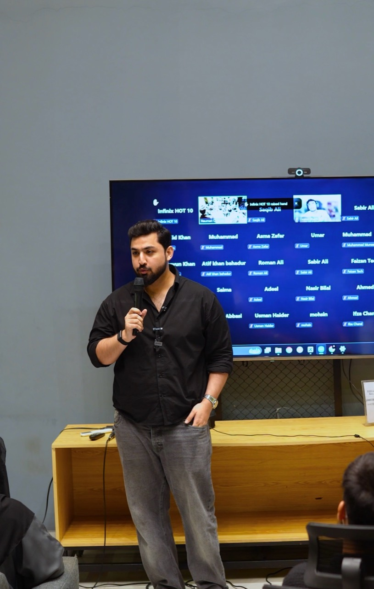
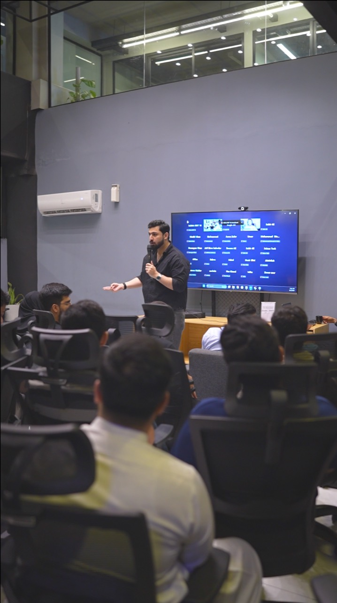
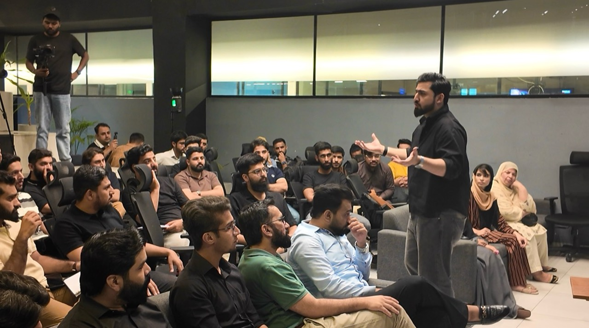
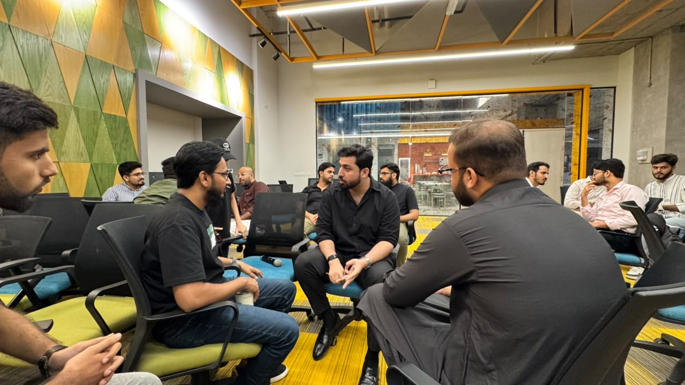
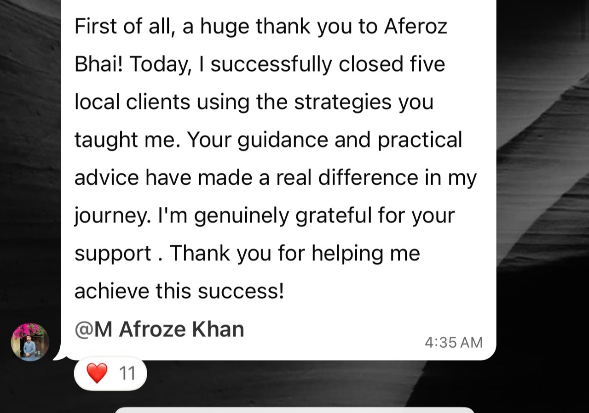
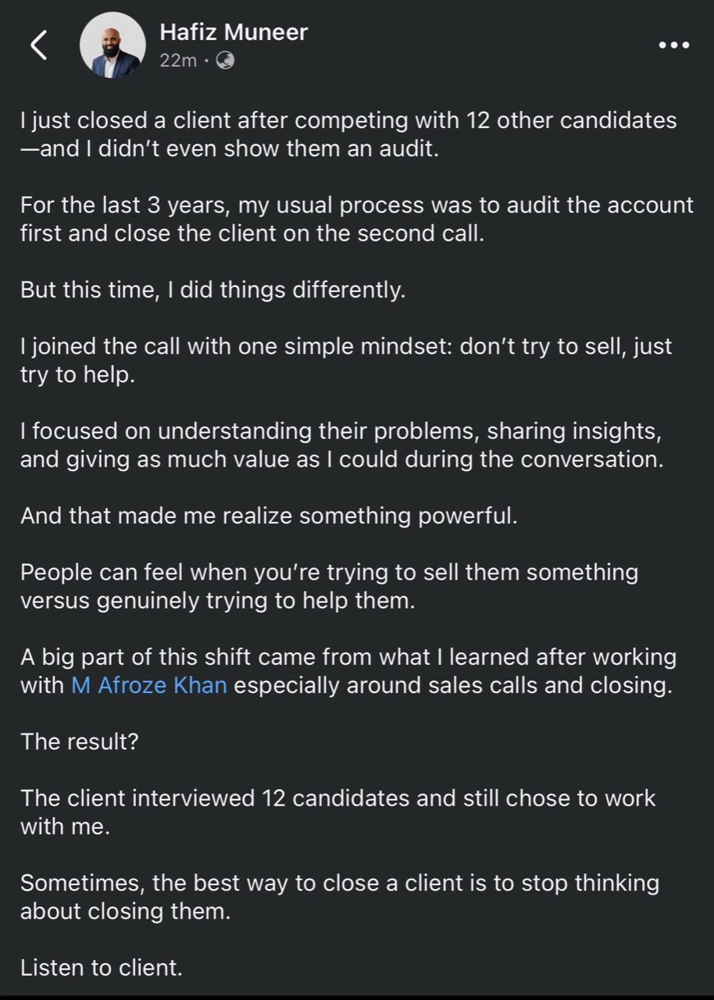
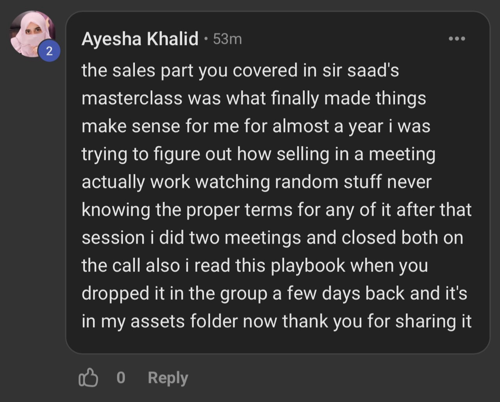
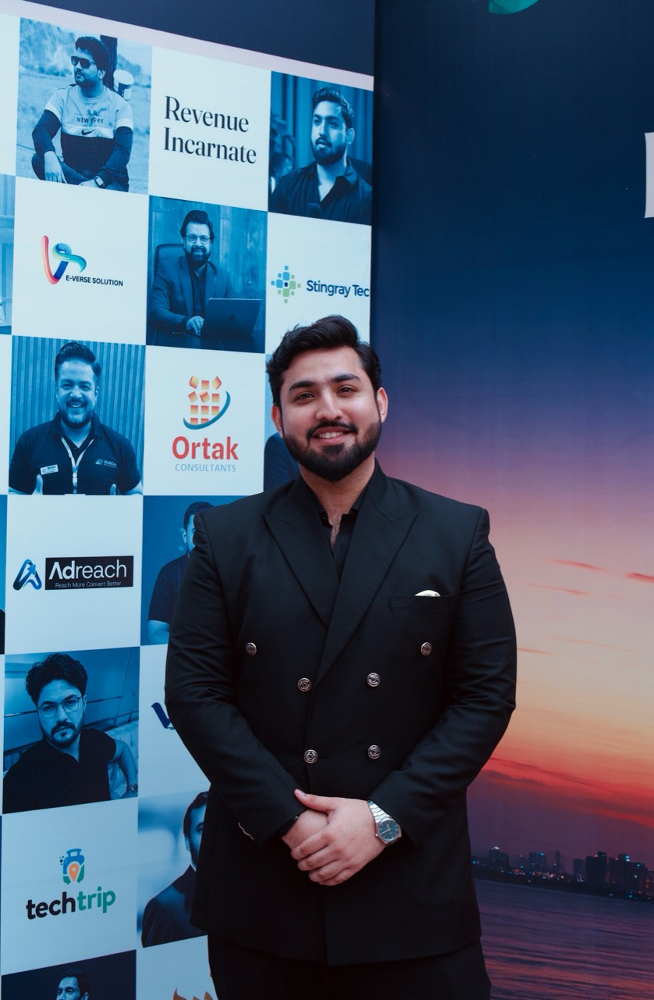

Your pipeline gets harder to read.
A positive conversation looks like progress, even when no next step has been agreed.
Lead high-ticket sales conversations that give buyers the clarity to decide.
Learn Vision, Friction, Lift: a way to understand the buyer’s business, position your offer, and agree on a real next step.
Reserve My SeatLet me
think
about it.
Illustrative sales-call moment
For people already selling a real offer.
FoundersAgency ownersSales teamsConsultantsFreelancersYou send the proposal. Follow up. Explain the offer again. Still, you don’t know what decision the buyer is waiting to make.
A positive conversation looks like progress, even when no next step has been agreed.
You discount before finding out whether the hesitation is about price, risk, trust, or timing.
Time goes into chasing a response instead of advancing a decision you both understand.
Select the line you hear most often.
The offer may be clear, but the outcome, risk, or decision itself may not be. Another follow-up won’t tell you which.
When discovery stays on the surface, the offer has to do too much work. More explaining rarely fills in what you never understood.
Better conversations make the buyer’s destination, barriers, and decision clearer before you present the solution.
See how VFL changes the conversationVision, Friction, Lift is Afroze Khan’s framework for thinking through a buying decision. Each part makes the next one more useful.
“Where does the buyer actually want to go?”
Before discussing your service, understand the outcome they want to create and why it matters.
“What is stopping them from getting there?”
Diagnose the constraints, missing capabilities, broken processes, risks, or decisions in the way.
“What needs to change to create movement?”
Connect the right process or offer to the friction that has already been established.

“We help agencies generate qualified appointments using…”
“You’re at X and trying to reach Y. What’s your current plan for creating that difference?”
Don’t manufacture pain. Don’t pitch blindly. Help the buyer diagnose the gap, then position the solution against it.
Reserve My SeatA live workshop about the decisions inside a sales conversation, from the first useful question to the agreed next step.

You will not just sit and listen.
We’ll stop conversations mid-call, question the diagnosis, challenge the offer, roleplay the buyer, and work through what should happen next.
Connect what the buyer says with the commercial problem underneath.
Use live examples, audience participation, and practical feedback to decide what should happen next.
Come with a real offer. Bring a notebook. Leave with a clearer way to run the conversation.
Examples and hot seats will be used where appropriate. Individual call reviews are not guaranteed for every attendee.


Shared by members of Afroze Khan’s community after applying what they learned around sales conversations, positioning, and closing.



These are individual community experiences. Results vary based on the offer, market, opportunity, and execution.
Build the capabilities that improve the probability of a good decision. Your results will still depend on your offer, opportunities, and practice.
Find the business outcome behind the buyer’s first answer before you reach for the pitch.
Separate symptoms from the real constraint and connect your offer to the gap you can credibly solve.
Identify whether an objection is about value, risk, trust, timing, or the decision itself.
Use relevant evidence and commercial context instead of adding more features and longer proposals.
Return to the buyer’s outcome and friction rather than relying on memorised rebuttals.
Create legitimate urgency through clarity, then know when to advance the conversation and when not to.
This is built for founders, agency owners, consultants, sales teams, closers, and freelancers moving into higher-ticket work.
Expect commercial reasoning and a framework you can apply. A magic line, motivation alone, or scripts that replace judgment won’t do the work for you.

After consulting over 400 founders and training more than 100 people on sales, Afroze kept seeing the same problem: deals were being lost much earlier than the objection at the end.
That pattern led to Vision, Friction, Lift. This workshop breaks the thinking down and makes you apply it to the conversations you actually have.
Creator of the Scalability Blueprint and Vision, Friction, Lift. Featured on Sync with Saad with 15K+ views, and The Fahad Show.
One live high-ticket sales workshop. Choose how you want to join.
LIVE HIGH-TICKET SALES WORKSHOP
Choose how you want to join. The workshop, training, and core materials remain the same.
Reserve My SeatYour ticket includes
Live in Karachi: venue and arrival details appear on your ticket after payment.
Live online: the joining link and access instructions arrive before the session.
Your ticket and payment receipt arrive by email after payment is verified. Bank transfers may require a manual verification step.
Live online: the joining link and access instructions are emailed before the session. Live in Karachi: the venue and arrival instructions are shown on your ticket after payment.
Attend live at the published time. You will see the complete materials and replay details before paying.
Need help with payment or confirmation? billing@revenueincarnate.com
A few details that matter
before you commit.
People already selling a real offer: founders, agency owners, consultants, salespeople, closers, B2B service providers, and freelancers moving into higher-ticket deals.
Both. Your PKR 5,000 ticket gives you access in your selected format. Choose Live in Karachi to attend physically or Live Online to join remotely.
The core workshop, VFL training, examples, and materials remain the same. Participation naturally differs by format: Live in Karachi attendees are in the room, while Live Online attendees join through the live video room.
No memorised closing lines. The workshop teaches you to understand, diagnose, and guide the conversation so you can respond to what the buyer is actually deciding.
Yes. Come with a real offer and a real sales situation in mind. The session uses practical examples, roleplays, and real scenarios, though an individual consultation or call review is not guaranteed for every attendee.
No. It is an optional checkout upgrade. You can purchase the complete PKR 5,000 workshop ticket independently.
The final pack contents will be confirmed before payment opens. You will see the complete list before choosing whether to add it.
Choose your format, enter your details, and continue to payment by bank transfer or card via PayFast. Your seat is confirmed after payment is verified and your ticket arrives by email. If it doesn’t arrive, contact billing@revenueincarnate.com.
Bring a real offer. Learn to understand the buyer’s vision, diagnose the friction, and establish the lift.
Questions about registration?
Email billing@revenueincarnate.com.
One ticket. Choose your attendance preference and enter the details needed for your ticket.